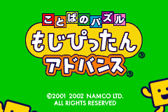

Kotoba no Puzzle - Mojipittan Advance (Japan)
SRAM 256K
Cartridge Identity
- Game Code
A8MJ(FamilyA8M)- Header Title
MOJIPITTAN- Maker / Revision
AF/ rev0- ROM Size
- 8.0 MiB (8,388,608 B)
- Save Media
SRAM 256K- SHA-256
8801695772e9102ced4d72913deef116c2b2b44c7f4990e20f9811879b5e6ab0
Screenshots


Observed Battery Save Layout
- Fill Byte & Active Size
0x00fill · 900–900 / 32,768 B active (entropy 7.25 bits/B)- Active Offset Ranges
0x7B83–0x7E7F,0x7F77–0x7F8D,0x7F90–0x7FFF(3 total)- ASCII Magic / Headers
---...///00011122233344455566677,7888999:::,AAABBBCCCDDDEEEFFFGGGHHHIIIJJJKK,KLLLMMMNNNOOOPPPQQQRRRSSSTTTUUUV,VVWWWXXXYYYZZZ,aaabbbcccdddeeefffggghhhiiijjjkk,klllmmmnnnooopppqqqrrrssstttuuuv,vvwwwxxxyyyzzz- Observed Variable Regions
- 0 bytes across 0 spans: None
- Candidate Checksum/Counter Spans
- None
Hardware MMIO Subsystems
dma_transfer0x80001a8,0x80001e0,0x8000218ppu_display0x8019e24,0x8019f20save_bus_sram_flash0x801e0bc,0x801e138